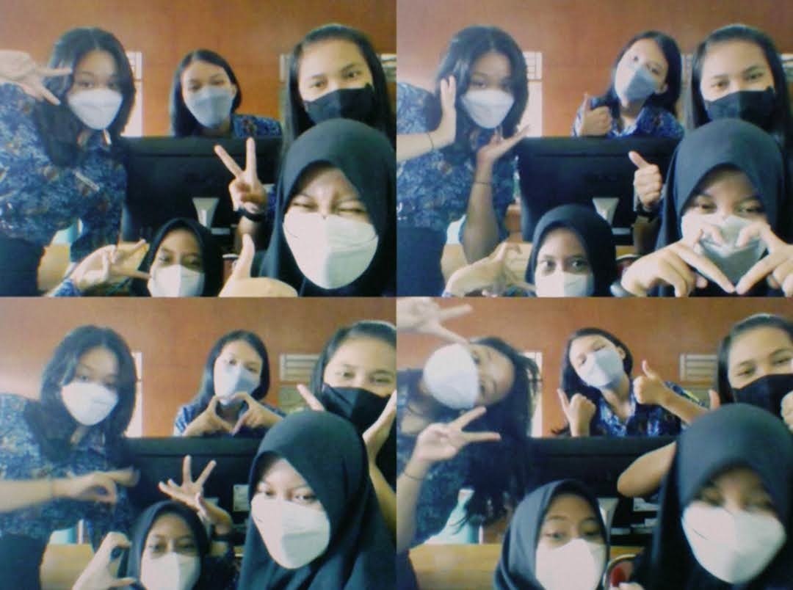
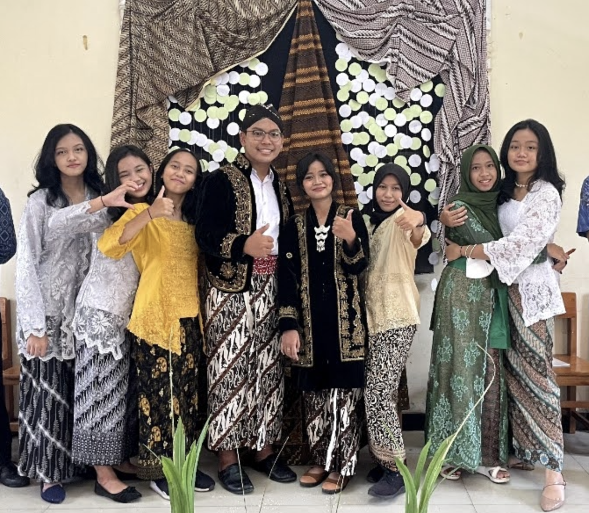
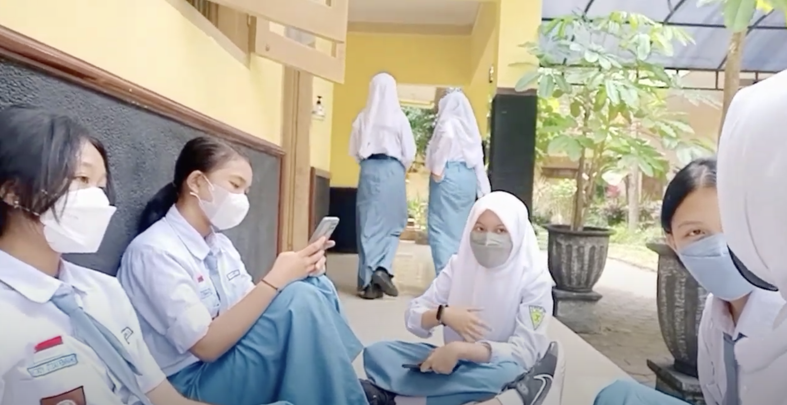
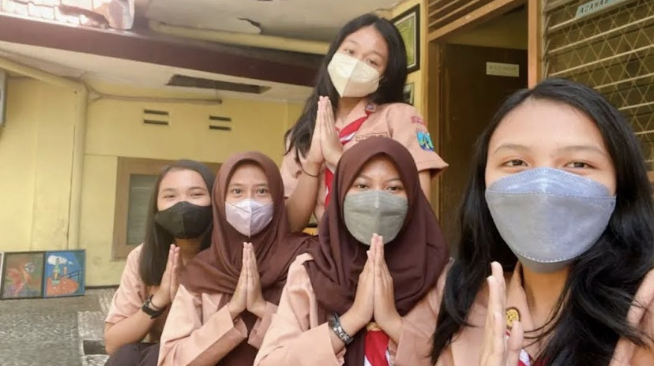
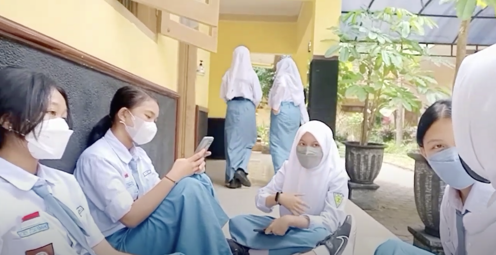
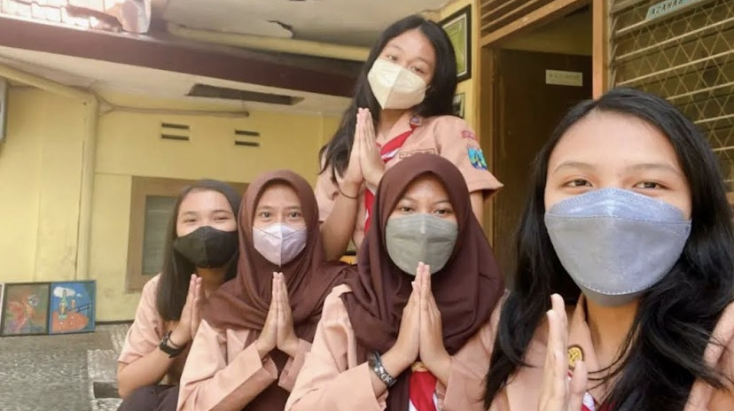

Kita tidak pernah saling mengenal sebelumnya. Hanya sekumpulan nama asing yang dipertemukan oleh satu tempat bernama KBC.



Seperti lotre, pertemuan kita adalah keberuntungan yang tak pernah kita pilih, tapi selalu kita syukuri.
 




Mirza dan Enjel, meski berbeda kelas, tak pernah benar-benar jauh— mereka selalu datang saat istirahat, selalu ada saat pulang, seolah berkata tanpa suara: “Kita masih satu.”
Kita tumbuh bersama dalam perjuangan dari awal sampai akhir. Melewati takut, gagal, berharap, dan bangkit lagi. Sampai akhirnya hidup membawa kita ke arah yang berbeda:
Nike dengan mimpinya, fk Unpad dengan tanggung jawab besar di pundaknya.
Dan Enjel… masih berjuang di garis paling sunyi, menahan lelah, takut, dan harapan yang kadang terasa rapuh.
Deffina di FKG UB, bertahan di dunia yang tak pernah mudah.
Devon yang gasuka dipanggil devon si Teknik Kimia UB, berjuang dengan kerasnya tuntutan dan kesunyian.
Amel di Sistem Informasi UB, mencoba tetap kuat di balik layar dan logika.
Reta di Keperawatan UB, belajar merawat orang lain sambil menahan lelahnya sendiri.
Sementara Mirza, di medan yang kuat, melangkah dengan doa yang tak henti— melawan ragu, cemas, dan mimpi yang terus ia genggam meski bergetar.
tahun baru, tawa yang sama, dan menginap di rumah Nike— tempat di mana kita merasa utuh, seolah dunia belum memisahkan apa pun.